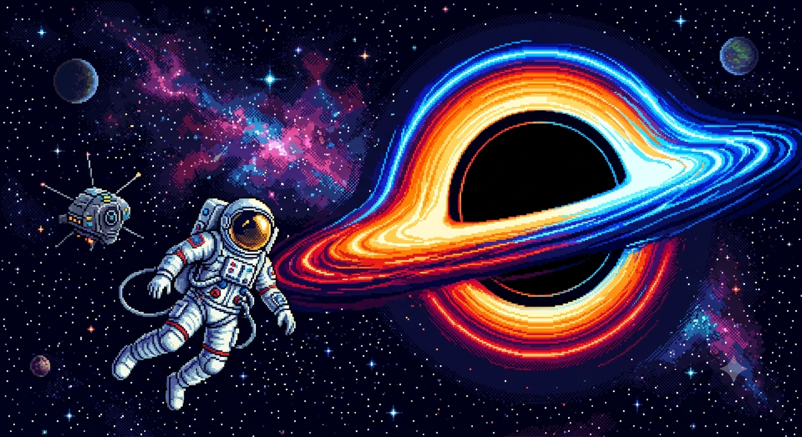

Bem-Vindos ao Meu Espaço!
Por: Derick
Fala, galera! Sejam muito bem-vindos ao meu blog! Criei este espaço — agora com essa combinação única entre o azul escuro do cosmos e o verde escuro — para ser o nosso ponto de encontro oficial para falar sobre três das minhas maiores paixões: animes, astronomia e games.
Por aqui, vou soltar as melhores indicações de séries, trazer curiosidades fascinantes sobre o espaço sideral e comentar os principais lançamentos e novidades do mundo dos jogos. Tudo isso de um jeito leve, sincero e direto ao ponto.
Fiquem à vontade para debater nos comentários e me contem logo de cara: vocês preferem uma boa maratona de anime, explorar um novo jogo ou passar horas olhando para as estrelas? 🌌🎮✨